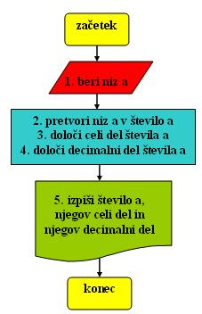
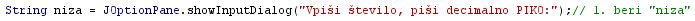
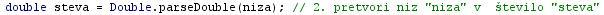
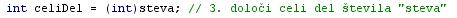
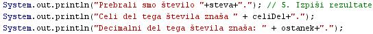
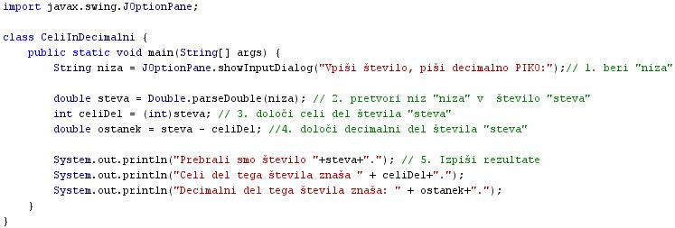

- Raèunalniški program je zaporedje navodil, ki jih mora raèunalnik izvesti.
- Raèunalnik potrebuje za izvajanje nalog program, katerega korake izvaja procesor raèunalnika.
- Raèunalniški program je lahko izveden v samostojni izvršilni obliki in se lahko samostojno izvaja.
- Tak program prepoznamo po konènici ".exe" - executable, kar pomeni v anglešèini "izvršljiv".
- Program je lahko tudi v obliki izvorne kode.
- Izvorna koda je tudi eden od naèinov zapisa algoritma.
- Izvorno kodo zapišemo s pomoèjo programskega jezika.
- Tak program v obliki izvorne kode mora biti pred zagonom preveden.
- Izvorno kodo prevajamo s prevajalnikom, ki se v anglešèini imenuje "compiler".
- Izvorno kodo moramo prevesti v kodo, ki jo "razume" procesor.
- Ker je procesor "stroj", imenujemo kodo, ki jo "razume" procesor, tudi strojna koda.
- Ker je koda, ki jo "razume" procesor, zapisana le z znaki 1 in 0, ki so dvojiški znaki, imenujemo to kodo tudi dvojiška koda.
- Pa si spet oglejmo kar primer:
- Besedni opis problema in rešitve.
- "Razstavi število na njegov celi del in njegov decimalni del": Napiši program, ki prebere število, ga razstavi na njegov celi in njegov decimalni del ter oba dela števila posebej izpiše. Vprašamo se, kaj vse bomo morali postoriti za rešitev problema in to opišemo v nekaj stavkih.
- Prebrati moramo število.
- Prebrano število, ki je niz, moramo pretvoriti v pravo število.
- Doloèimo celi del prebranega števila.
- Doloèimo decimalni del celega števila.
- Izpišemo ustrezno sporoèilo.
- "Razstavi število na njegov celi del in njegov decimalni del": Napiši program, ki prebere število, ga razstavi na njegov celi in njegov decimalni del ter oba dela števila posebej izpiše. Vprašamo se, kaj vse bomo morali postoriti za rešitev problema in to opišemo v nekaj stavkih.
- Psevdokoda
- "Razstavi število na njegov celi del in njegov decimalni del": Pri opisovanju problema si pomagamo z besedami, ki spominjajo na ukaze programskega jezika:
- beri niz a;
- pretvori niz a v število a;
- doloèi celi del a;
- doloèi decimalni del a;
- izpiši ustrezno sporoèilo;
- "Razstavi število na njegov celi del in njegov decimalni del": Pri opisovanju problema si pomagamo z besedami, ki spominjajo na ukaze programskega jezika:
- Diagram poteka
- Primer "Razstavi število na njegov celi del in njegov decimalni del": Ukaze psevdokode zamenjajo simboli posameznih korakov algoritma 
- Program (raèunalniški programi)
- "Razstavi število na njegov celi del in njegov decimalni del": Problem opišemo kar s programom v programskem jeziku Java.
- prebrati število a kot niz
- prebrani niz a pretvoriti v število a - to storimo z metodo "Double.parseDouble(niz);"
- doloèiti celi del števila a - to storimo z metodo "(int)steva"
- doloèiti decimalni del števila a - to storimo z odštevanjem celega dela od števila a

- izpis rezultata z metodo "JOptionPane.showMessageDialog()"
- "Razstavi število na njegov celi del in njegov decimalni del": Problem opišemo kar s programom v programskem jeziku Java.
- V okolju za pisanje izvorne kode v jeziku Java, za prevajanje in za interaktivno delo zapiši zgornji program "CeliInDecimalni". Pomagaj si s sliko.
- Kodo lahko tudi kopiraš iz te datoteke in jo prilepiš v okolje, v katerem pišeš programèke. Pozor: koda, ki jo boš kopiral/a, vsebuje eno, dve, tri ali štiri napake. Èe želiš, da bo program deloval, moraš napake odkriti in jih odpraviti.
- Izvorno kodo shrani pod imenom "ImePriimek36.java". ImePriimek je seveda tvoje lastno ime in priimek.
- Datoteko "ImePriimek36.java" prevedi.
- Prevedeno datoteko zaženi, preveri rezultat v interaktivnem oknu in poklièi profesorja, da vidi rezultat.
- Preriši diagram poteka v tej uèni enoti v zvezek.
1. Kaj je raèunalniški program?
2. Kako prepoznamo program v samostojni izvršljivi obliki?
3. Kaj potrebujemo za zagon programa, èe je program zapisan v izvorni kodi?
4. Kako imenujemo kodo, ki jo "razume" procesor?
5. Naštej naèine zapisa algoritma.
6. Koliko korakov vsebuje algoritem primera v tej uèni enoti? Kratko opiši posamezne korake
7. Katero novo metodo smo spoznali v priemru v tej uèni enoti?
8. Kakšna je naloga metode, ki smo jo spoznali v tej uèni enoti?
9. Kateri podatkovni tip smo prviè uporabili v primeru te uène enote?
10. V kakšnih primerih moramo uporabiti ta podatkovni tip?
2. Zapiši od ene do pet kljuènih besed, ki povzemajo vsebino te uène enote.
3. Povezave do dodatnih informacij.
Gradiva na spletnih straneh fakultete za matematiko in fiziko v Ljubljani.
Angleška verzija Wikipedije
Slovenska verzija Wikipedije